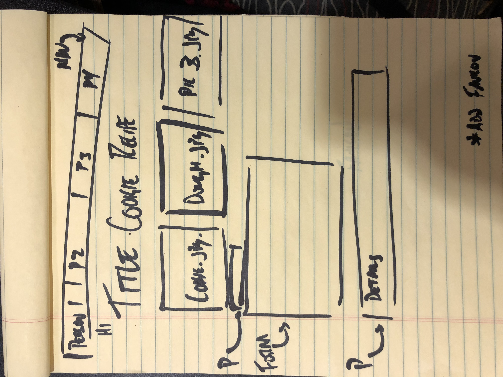
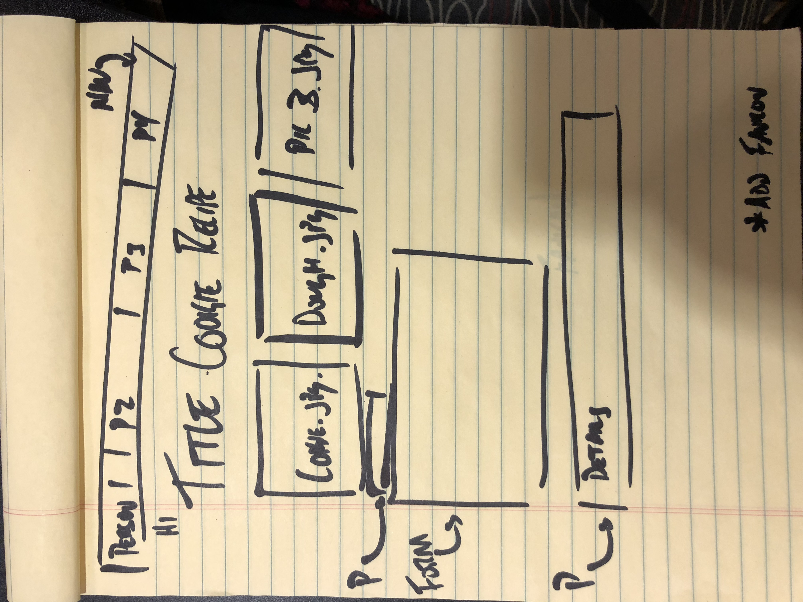

My name is Abbey Warren. I am from Rhode Island. This is my group website design.
These are my answers to question 2, 3, and 6
2. They looked the same across all browsers
3. Yes the field is put into focus with a blue outline around the box. This is important so that it can help the user understand what part of the form they are filling out.
4. No the radio buttons do not work because they do not allow you to choose an option for both questions. Therefore, I changed the "name" value for the two questions.

 
